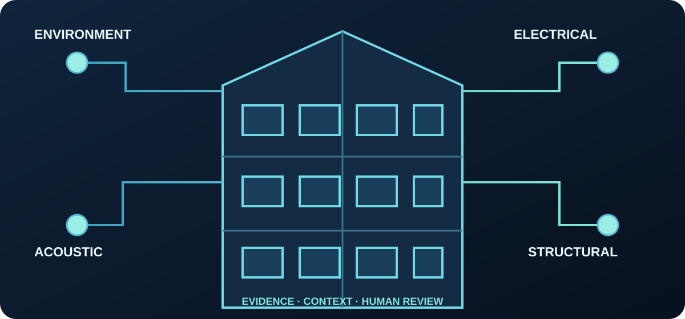

04 / BUILDING SAFETY
HOMEGUARD AI
Multi-Modal Predictive Building Intelligence System

Detect Early. Locate Precisely. Protect Better.
Software foundation · simulation-only · validation pendingAn evidence-driven platform concept combining building observations, tracking changes and data quality, explaining uncertainty and prioritizing qualified inspection.
Six product domains
What exists today
- Typed sensor observations and baselines
- Quality, calibration and unit checks
- Transparent baseline-deviation evaluation
- Synthetic three-floor scenario and JSON reports
- GitHub Actions CI
No trained AI model or real sensor deployment; current data is synthetic.
Safety and trust
Decision support only, not a certified alarm, structural certification, electrical diagnosis or autonomous control. Certified protective devices and qualified professionals remain essential.
Current procurement policy excludes Chinese-origin AI models, providers and model-hosting services.
Engineering documents
- README
- Architecture
- 29 intelligence capabilities
- Safety case
- Model and supply-chain policy
- Roadmap
- Current source files
Dedicated repository migration is pending; this is the current source location.